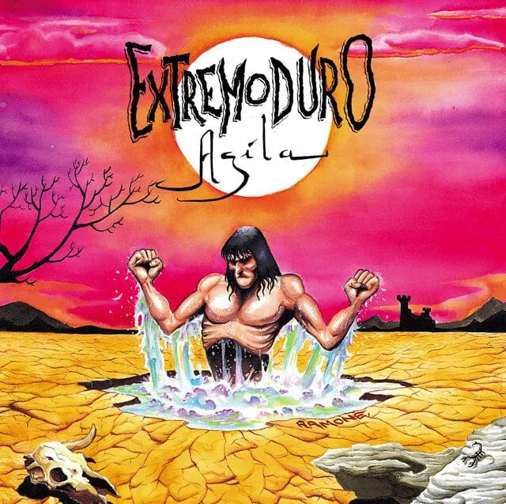
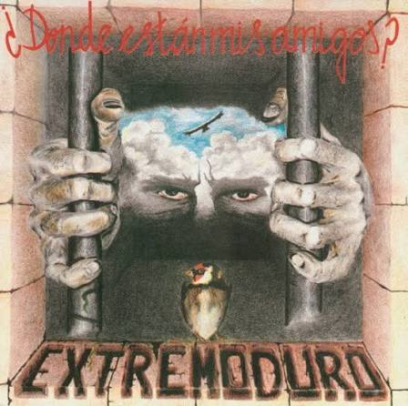

Agila
1996
Uno de los discos más queridos por los seguidores, con temas como «Buscando una luna»


1996
Uno de los discos más queridos por los seguidores, con temas como «Buscando una luna»

1998
Álbum con temas de sus primeros años, grabados con un sonido más potente.

2002
Rock crudo y poético, con himnos como «Puta».

2008
Disco ambicioso y de producción más cuidada.

1993
Uno de los mejores albumes de la banda con canciones iconicas como «Historias prohibidas».